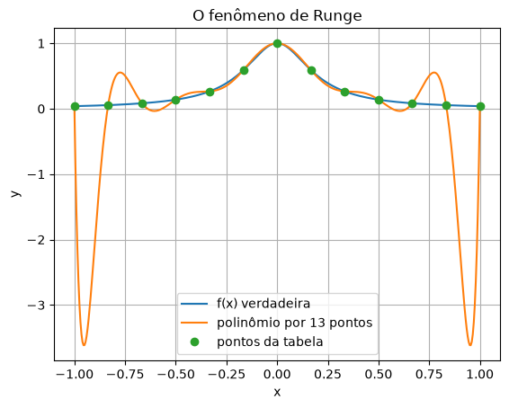
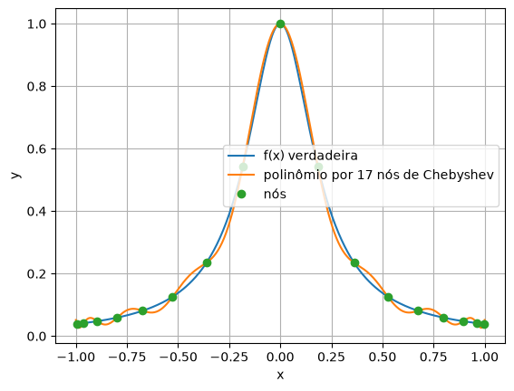
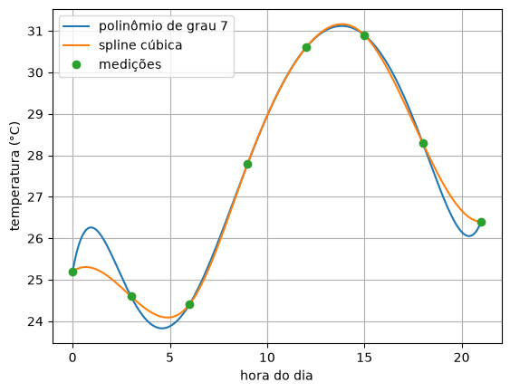
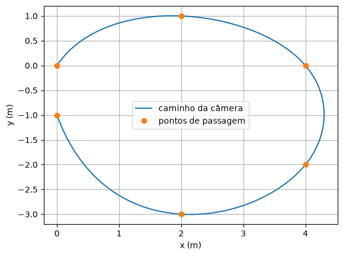

10. Runge e splines¶
No capítulo 9, o polinômio interpolador acertou os valores entre os pontos de tabelas pequenas. A intuição diz que, com mais pontos, ele deveria acertar ainda mais. A intuição está errada, e o motivo é um dos resultados mais importantes da interpolação: com pontos igualmente espaçados, um polinômio de grau alto oscila entre eles, e a oscilação piora com mais pontos.
Este capítulo mostra o problema, uma primeira saída (escolher onde ficam os pontos) e a saída que se usa na prática: em vez de um polinômio de grau alto para a tabela inteira, um polinômio de grau baixo por trecho, bem costurados. São as splines.
Mais pontos, polinômio pior¶
🌍 Contexto: Carl Runge, 1901
O matemático alemão Carl Runge mostrou que, para uma função tão comportada quanto \(f(x) = 1/(1 + 25x^2)\) (uma "lombada" suave), o polinômio interpolador em pontos igualmente espaçados não converge para \(f\) quando o número de pontos cresce: perto das pontas do intervalo, o erro vai para o infinito. Isso derrubou a ideia de que "mais dados, melhor aproximação" vale sempre.
# Quebre o metodo: mais pontos, polinomio PIOR.
# f(x) = 1 / (1 + 25 x**2) em [-1, 1], com pontos igualmente espacados.
import numpy as np
import matplotlib.pyplot as plt
def f(x):
return 1 / (1 + 25 * x**2)
def lagrange(xs, ys, x):
soma = 0.0
for i in range(len(xs)):
L = 1.0
for j in range(len(xs)):
if j != i:
L = L * (x - xs[j]) / (xs[i] - xs[j])
soma = soma + ys[i] * L
return soma
xs_fino = np.linspace(-1, 1, 401)
for n in [5, 9, 13, 17]:
nos = np.linspace(-1, 1, n)
erro = np.max(abs(lagrange(nos, f(nos), xs_fino) - f(xs_fino)))
print(f"{n:2d} pontos: maior erro = {erro:8.3f}")
nos = np.linspace(-1, 1, 13)
plt.figure()
plt.plot(xs_fino, f(xs_fino), label="f(x) verdadeira")
plt.plot(xs_fino, lagrange(nos, f(nos), xs_fino), label="polinômio por 13 pontos")
plt.plot(nos, f(nos), "o", label="pontos da tabela")
plt.xlabel("x")
plt.ylabel("y")
plt.title("O fenômeno de Runge")
plt.grid()
plt.legend()
plt.show()
5 pontos: maior erro = 0.438
9 pontos: maior erro = 1.045
13 pontos: maior erro = 3.658
17 pontos: maior erro = 14.363

💥 Quebre o método
Com 17 pontos, o polinômio passa exatamente por todos eles e, entre os dois últimos, erra por 14, numa função que nunca passa de 1. O polinômio de grau 16 é obrigado a passar pelos pontos e "paga" com oscilações enormes onde há pouco controle: nas pontas. Um conjunto de dados maior, que devia melhorar a estimativa, a piora. Nenhum aviso aparece: a curva passa pelos pontos, e quem só confere os pontos da tabela acha que está tudo certo.
Nós de Chebyshev¶
Quando dá para escolher onde medir, há uma saída: pôr mais pontos perto das pontas do intervalo, que é onde o polinômio escapa. Os nós de Chebyshev fazem isso de um jeito ótimo:
São as projeções, no eixo \(x\), de pontos igualmente espaçados num semicírculo: por isso ficam mais juntos nas pontas.
# Os mesmos 13 pontos, mas nos nos de Chebyshev: mais juntos nas pontas.
# x_k = cos((2k + 1) pi / (2n)), k = 0, 1, ..., n-1
import numpy as np
import matplotlib.pyplot as plt
def f(x):
return 1 / (1 + 25 * x**2)
def lagrange(xs, ys, x):
soma = 0.0
for i in range(len(xs)):
L = 1.0
for j in range(len(xs)):
if j != i:
L = L * (x - xs[j]) / (xs[i] - xs[j])
soma = soma + ys[i] * L
return soma
xs_fino = np.linspace(-1, 1, 401)
for n in [5, 9, 13, 17]:
nos = np.zeros(n)
for k in range(n):
nos[k] = np.cos((2 * k + 1) * np.pi / (2 * n))
erro = np.max(abs(lagrange(nos, f(nos), xs_fino) - f(xs_fino)))
print(f"{n:2d} nos de Chebyshev: maior erro = {erro:6.3f}")
plt.figure()
plt.plot(xs_fino, f(xs_fino), label="f(x) verdadeira")
plt.plot(xs_fino, lagrange(nos, f(nos), xs_fino), label="polinômio por 17 nós de Chebyshev")
plt.plot(nos, f(nos), "o", label="nós")
plt.xlabel("x")
plt.ylabel("y")
plt.grid()
plt.legend()
plt.show()
5 nos de Chebyshev: maior erro = 0.402
9 nos de Chebyshev: maior erro = 0.171
13 nos de Chebyshev: maior erro = 0.069
17 nos de Chebyshev: maior erro = 0.033

Agora o erro cai com mais pontos: de 0,40 para 0,03. Mas a saída só serve quando se escolhe onde medir. Numa tabela que chega pronta (medições de hora em hora, catálogo de fabricante), os pontos são o que são.
Um polinômio por trecho¶
Se um polinômio de grau alto oscila, a saída é não usar grau alto: um polinômio de
grau baixo em cada trecho entre dois pontos. O caso mais simples, uma reta por
trecho, é a interpolação linear do capítulo 9, e o numpy a tem pronta.
🧰 Comando novo: np.interp
np.interp(x, xs, ys) faz a interpolação linear na tabela (xs em ordem
crescente), para um número ou para um array inteiro de valores de x. Fora da
tabela, ele não extrapola: repete o valor da ponta.
Retas por trecho não oscilam, mas fazem bicos nos pontos da tabela: a inclinação muda de repente. Uma trajetória de robô com bicos dá solavanco; uma curva de fonte tipográfica com bicos fica feia. A solução é subir para grau 3 e exigir que os trechos se encaixem suavemente.
🧑🏫 No quadro — a spline cúbica
1. Em cada trecho \([x_i, x_{i+1}]\), um polinômio de grau 3 próprio, \(s_i(x)\). Com \(n\) pontos, são \(n - 1\) trechos e \(4(n-1)\) coeficientes.
2. As exigências (cada uma é uma equação linear nos coeficientes):
- cada trecho passa pelos seus dois pontos (a curva é contínua);
- nos pontos internos, os dois trechos vizinhos têm a mesma inclinação (\(s_i' = s_{i+1}'\)): sem bicos;
- e a mesma curvatura (\(s_i'' = s_{i+1}''\)): sem trancos.
3. Faltam duas equações, uma em cada ponta. A spline natural exige curvatura zero nas pontas; outras escolhas usam a inclinação da ponta.
4. Juntando tudo, sai um sistema linear em que cada equação envolve só os vizinhos: uma matriz tridiagonal (só a diagonal e as duas vizinhas), que se resolve muito rápido pelos métodos da Unidade 4.
💡 Pense assim: a régua flexível do desenhista
Antes dos computadores, desenhistas de navios e de aviões traçavam curvas suaves com uma régua flexível de madeira, a spline, presa por pesos nos pontos que a curva tinha de seguir. A régua assumia sozinha a forma de menor "dobra", sem bicos. A spline cúbica é a versão matemática dessa régua, e herdou o nome.
Splines na prática¶
🧰 Comando novo: from scipy.interpolate import CubicSpline
CubicSpline(xs, ys) monta a spline cúbica da tabela e devolve algo que se usa
como uma função: s = CubicSpline(xs, ys) e depois s(x) dá o valor em
x, que pode ser um número ou um array inteiro.
🌍 Contexto: temperatura de hora em hora
Uma estação meteorológica simples registra a temperatura a cada 3 horas. Para comparar com outra que registra de hora em hora, ou para estimar o horário mais frio da madrugada, é preciso interpolar.
# Temperatura em Joao Pessoa, medida a cada 3 horas num dia de verao.
# Queremos a temperatura de hora em hora.
import numpy as np
import matplotlib.pyplot as plt
from scipy.interpolate import CubicSpline
horas = np.array([0, 3, 6, 9, 12, 15, 18, 21])
temp = np.array([25.2, 24.6, 24.4, 27.8, 30.6, 30.9, 28.3, 26.4])
def lagrange(xs, ys, x):
soma = 0.0
for i in range(len(xs)):
L = 1.0
for j in range(len(xs)):
if j != i:
L = L * (x - xs[j]) / (xs[i] - xs[j])
soma = soma + ys[i] * L
return soma
spline = CubicSpline(horas, temp) # um polinomio de grau 3 por trecho
h = np.linspace(0, 21, 211)
print(f"1 h da manha: linear = {np.interp(1, horas, temp):.2f}, "
f"polinomio = {lagrange(horas, temp, 1):.2f}, spline = {spline(1):.2f} °C")
print(f"menor valor entre 3 h e 9 h: polinomio = {np.min(lagrange(horas, temp, h[30:91])):.2f}, "
f"spline = {np.min(spline(h[30:91])):.2f} °C")
plt.figure()
plt.plot(h, lagrange(horas, temp, h), label="polinômio de grau 7")
plt.plot(h, spline(h), label="spline cúbica")
plt.plot(horas, temp, "o", label="medições")
plt.xlabel("hora do dia")
plt.ylabel("temperatura (°C)")
plt.grid()
plt.legend()
plt.show()
1 h da manha: linear = 25.00, polinomio = 26.26, spline = 25.29 °C
menor valor entre 3 h e 9 h: polinomio = 23.83, spline = 24.09 °C

Entre meia-noite (25,2 °C) e 3 h (24,6 °C), o polinômio de grau 7 sobe para 26,3 °C: a madrugada ficaria mais quente que a meia-noite, sem nenhuma medição que indique isso. É Runge de novo, em escala menor. A spline passa pelos mesmos pontos sem inventar morros.
Mesmo método, outra área¶
🌍 Contexto: o caminho de uma câmera
Nos filmes, a câmera que voa por um cenário (presa num drone, num trilho ou num braço robótico) segue um caminho definido por alguns pontos de passagem. O caminho entre eles precisa ser suave: sem bicos (solavanco na imagem) nem oscilações.
Aqui a curva nem é o gráfico de uma função: ela pode voltar para trás e se cruzar. O truque é usar o tempo como variável e fazer duas splines, uma para \(x(t)\) e outra para \(y(t)\).
# Mesmo metodo, outra area: o caminho de uma camera de cinema (ou de um
# drone de filmagem) por pontos de passagem. Uma spline para x(t) e outra
# para y(t): o caminho sai suave, sem curvas bruscas.
import numpy as np
import matplotlib.pyplot as plt
from scipy.interpolate import CubicSpline
t = np.array([0, 1, 2, 3, 4, 5]) # segundos
x = np.array([0.0, 2.0, 4.0, 4.0, 2.0, 0.0]) # metros
y = np.array([0.0, 1.0, 0.0, -2.0, -3.0, -1.0])
caminho_x = CubicSpline(t, x)
caminho_y = CubicSpline(t, y)
tt = np.linspace(0, 5, 200)
print(f"em t = 2.5 s a camera esta em ({caminho_x(2.5):.2f}; {caminho_y(2.5):.2f}) m")
plt.figure()
plt.plot(caminho_x(tt), caminho_y(tt), label="caminho da câmera")
plt.plot(x, y, "o", label="pontos de passagem")
plt.xlabel("x (m)")
plt.ylabel("y (m)")
plt.grid()
plt.legend()
plt.show()

Erros comuns deste capítulo¶
| Sintoma | Causa provável |
|---|---|
| a curva passa pelos pontos mas faz "morros" entre eles | Runge: polinômio de grau alto em pontos igualmente espaçados. Use spline |
ValueError no CubicSpline ou no np.interp |
os xs precisam estar em ordem crescente e sem repetição |
np.interp devolve um valor constante fora da tabela |
é o comportamento dele: repete a ponta, não extrapola |
| a spline oscila perto das pontas | poucos pontos, ou pontos muito desiguais nas pontas; a escolha das condições de ponta muda o resultado ali |
| o caminho da câmera fica esquisito | usar \(y\) como função de \(x\) numa curva que volta para trás: use o tempo como variável, com duas splines |
Onde isso é usado de verdade¶
- Tipografia e desenho vetorial: as letras desta página são curvas por trechos (de Bézier, parentes próximos das splines).
- Engenharia: o perfil de asas, cascos de navios e carrocerias de carros é desenhado com splines, herdeiras da régua flexível.
- Robótica e cinema: trajetórias suaves de braços robóticos, drones e câmeras.
- Dados meteorológicos e sensores: reamostrar séries com horários diferentes para um mesmo relógio.
- Métodos espectrais: os nós de Chebyshev são a base de métodos numéricos de altíssima precisão (e da biblioteca Chebfun).
Resumo¶
- Com pontos igualmente espaçados, o polinômio interpolador de grau alto oscila, e piora com mais pontos: é o fenômeno de Runge.
- Os nós de Chebyshev, mais juntos nas pontas, resolvem quando se pode escolher onde medir.
- Splines usam um polinômio de grau baixo por trecho. A linear (
np.interp) faz bicos; a cúbica é suave, com inclinação e curvatura contínuas. - A spline cúbica sai de um sistema tridiagonal, resolvido rápido.
- Para curvas que voltam para trás, use o tempo como variável e uma spline por coordenada.
Para praticar¶
A Lista 10 tem uma spline linear à mão (✏️), os nós de Chebyshev, a comparação entre polinômio e spline e a reamostragem de um sinal.